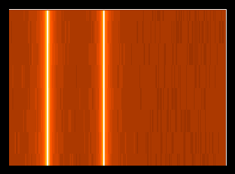
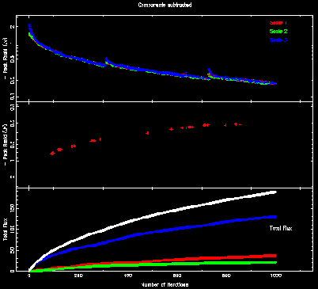
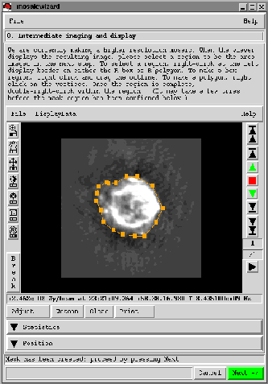

|
AIPS++ Newsletter
November 2000
AIPS++ Tools
|
Main
Newsletter
Index
Tool
Articles:
Polarimetric
Analysis of
Images
Mosaicwizard
Vis Plane
Calibration
Components
GBT
Observing
Interface
|
Polarimetric Analysis of Images
Neil Killeen - ATNF
The Image tool is the basic AIPS++ tool with which you manipulate images.
Working with it is the Imagepol tool; its job is dedicated polarimetric
analysis of images.
Creating Imagepol tools
The imagepol tool is constructed from either an AIPS++ disk image
file, or from an Image tool. This image must have a Stokes coordinate
or an error will occur. The idea is that you will generally
provide an Image holding RA, DEC, Frequency and Stokes coordinates.
Here are some examples:
- include 'imagepol.g'
- p1 := imagepol('pks1333.iquv') # 1
- im1 := image('pks1333.iquv') # 2
- p2 := imagepol(im1) # 3
- p2.summary() # 4
The first example makes the Imagepol tool directly from a disk file
which has Stokes I, Q, U and V. The second line makes an Image tool
from the same file and then we construct the Imagepol tool from that
Image tool. We use the summary function
of the Imagepol tool to summarise the image (it's just the Image tool
function summary that is really invoked).
What can I do with it?
So far we have seen how to construct Imagepol tools, and
the use of the summary function. Let us assume from now
on that we constructed an Imagepol tool from an image
with RA,DEC, Frequency (many channels), and Stokes (IQUV say)
- include 'imagepol.g'
- p := imagepol('pks1333.iquv')
Recovering specific Stokes
You can recover a particular Stokes Image :
- i := p.stokesi() # Make Image tools
- v := p.stokesv()
- q := p.stokes('q')
-
- i.statistics() # Run Image tool functions
- v.view()
- i2 := i.subimage('pks1333.i') # Copy to disk file
-
- imagedones() # Destroy all Image tools when fed up
You can use either the dedicated functions such as stokesi, stokesq
or use the stokes function which takes an argument saying which
Stokes you want.
Note that the variables i, q and v are in fact Image tools.
These Image tools are actually `virtual reference images' (see the
August 2000 Newsletter);
they reference bits of the image from which the
Imagepol tool was originally constructed. You can use all of the
Image tool functions on them as usual (a couple of examples are shown).
Generating Secondary Images
You can generate all of the usual secondary polarimetric analysis
secondary images such as polarized intensity, linearly polarized intensity
position angle and so on. There are dedicated functions and
a generic one pol to which you
supply an argument saying which quantity you want (useful for
scripts). Here are a few examples.
- lpi := p.linpolint() # linearly polarized intensity
- lpa := p.linpolposang() # linearly polarized position angle
- tpi := p.totpolint)() # total polarized intensity
- flp := p.fraclinpol() # fractional linear polarization
- ftp := p.fractotpol() # fractional total polarization
- lpi2 := p.pol('lpi') # Specify which polarized quantity
-
- lpi.statistics() # Run Image tool function
Again all of the returned variables are virtual Image tools upon which
you can run all the Image tool functions.
Generating Error Images
You can also recover the error images assuming simplistic propagation
of Gaussian errors. In AIPS++ we do not (yet ?) associate an
error value with each image pixel value and propagate errors
automatically (very hard problem...). The errors are stored
in their own image as needed. The standard deviation of the thermal
noise is either worked out for you (with a clipped-mean algorithm)
from the data, or you can supply it if you know it better.
Some of the functions return a scalar (as the error is constant
over the image), some return an Image tool.
- sig := p.sigma(clip=5) # A scalar; best guess at thermal noise
- sigi := p.sigmastokes('i') # A scalar; standard deviation of noise
- sigi := p.sigmastokesi();
- sigv := p.sigmastokesv(); # A scalar
-
- siglpi := p.sigmalinpolint() # A scalar; linearly pol intensity
- siglpa := p.sigmalinpolposang() # An Image tool;
# linearly polarized position angle
- sigflp := p.sigmafraclinpol() # An Image tool; fractional linear pol
The philosophy behind the handling of errors is to defer it as long as
possible. Many of you are probably familiar with AIPS and Miriad where
we blank output images based on a variety of statistical tests. For
example, you might blank the linear polarization position angle image
when its error is greater than some value. Doing that means you have to
keep on regenerating the output image every time you want to try a
different blanking value or method.
So to avoid this we have tried to defer this step until you actually use
the images. For example
- lpa := p.linpolposang() # linearly polarized position angle
- siglpa := p.sigmalinpolposang() # and its error image
-
- lpa.statistics(mask='$siglpa<10') # Blank when error > 10 degrees
- lpa.view(mask='$siglpa<20') # Blank when error > 20 degrees
You can see we have used the mask argument of the
statistics and
view functions to do this on-the-fly. This
is very convenient. Note that we have used the $ syntax (e.g.
mask='$siglpa < 20') because the error Image tools are virtual (there is
no disk file associated with them); the only way to get at their values
is via the tool.
You can of course always copy virtual images to disk if you wish:
- siglpa2 := siglpa.subimage('lpa')
- siglpa2.done()
Finding the Rotation Measure
Now we come to the vexatious question of the Rotation Measure.
The Imagepol tool offers you two algorithms. The first is a
'traditional' approach of fitting position angle as a function of
frequency. The algorithm used is that of Leahy et al (Astronomy &
Astrophysics, 156, 234).
Recall that our Imagepol tool was constructed from an image holding (probably)
RA, DEC, Frequency, and Stokes coordinates.
- ok := p.rm(rm='rm', rmerr='rmerr', rmmax=800, maxpaerr=10)
For each spatial pixel, a spectrum (frequency) of position angles is
computed (from Q and U stored in the image) and fit. It is very
important to specify the rmmax for this algorithm. All RM algorithms of
this nature struggle with the n-pi ambiguity and this argument allows
you to constrain the process of handling it in some vaguely useful way.
We have also specified here a maximum allowed error in the position
angle; otherwise that frequency is rejected for that spatial pixel. We
output two images, the RM image and its error image. Note that these
are disk image files, not virtual images.
- ok := p.rm(rm='rm', rmerr='rmerr', rmmax=800, maxpaerr=10)
The Imagepol tool also offers a new and novel Fourier-based algorithm
(
Killeen, Fluke, Zhao and Ekers, 2000, submitted).
This algorithm generates an
output image which is the polarized intensity as a function of Rotation
Measure. It does not suffer from ambiguity and it can recover multiple
RM screens unresolved by the beam (as long as they are not along the
same line-of-sight).
- p := imagepoltestimage(outfile='iquv.im', rm="1e5 5e5", nx=8,
+ ny=8, nf=256, f0=1.4e9, bw=8e6)
- p.frm(amp='amp', pa='pa') # Fourier transform;
- amp := image('amp') # Look at polarized intensity
- amp.view() # And reorder to put RM along X-axis
In this example, we have used the other Imagepol constructor
imagepoltestimage to generate a test image with the specified Rotation
Measure values. The generated test image is 4-dimensional (RA/DEC; 8 by 8
pixels), Stokes (4 pixels; IQUV) and Frequency (256 pixels). The source
is just a constant I (if you don't add noise all spatial pixels will be
identical) and V. Q and U vary with frequency according to the given Rotation
Measures.
The Fourier algorithm Fourier transforms the Complex polarization
P = Q + iU image as a function of frequency to a function of Rotation Measure.
In the example we save images of the polarized intensity and position angle.

Figure T1: [Click on figure for higher resolution.]
The figure shows the result of viewing the polarized intensity
where we have reordered the display to put Rotation Measure along
the first axis. You can see the two RM components recovered;
the one to the left is the larger one.
What's missing
Presently there is no specialized display for polarimetric quantities.
For example, the traditional vector overlay of linearly polarization.
This will be developed for release 1.5. One can also imagine doing
interesting things with Complex representations of polarimetric
quantities. The Image tool does not support Complex images yet
(although of course we can create them and write them to disk with C++
code) and this path is also not yet well persued.
Functions for depolarization ratio and errors will also be in place for
release 1.5
|
Main
Newsletter
Index
Tool
Articles:
Polarimetric
Analysis of
Images
Mosaicwizard
Vis Plane
Calibration
Components
GBT
Observing
Interface
|
The Mosaicwizard in AIPS++
Mark Holdaway - NRAO/Tucson
Glish, the scripting language and command interpreter for AIPS++,
allows the astronomer to have a great deal of control over a series of
complex processing steps, running tools and automating decision-making
based on the tools' output. But glish also permits astronomical
programmers to bundle up their understanding of complex data
processing into simple scripts or wizards which are very easy for
non-experts to use. Mosaicwizard and imagerwizard, included in release 1.4 of
AIPS++, are good examples of the simplicity which can be achieved using
glish in this manner.
To start the mosaicwizard, start up AIPS++ and type at the command line:
- include 'mosaicwizard.g';
- mosaicwizard();
Two new windows will appear, one for the mosaicwizard GUI, and one for
the scripter, which displays commands emitted by the mosaicwizard.
The mosaicwizard GUI guides you through the mosaicing process, asking
for any required information and making reasonable defaults whenever
possible. Each step of the process has a title (such as "Select an
AIPS++ MeasurementSet or UVFITS file"), along with a few sentences
that explain in more depth about what is required and what will be
happening. Below the explanatory message there will usually be one or
more widgets to accept your input. After you have given your input,
the green "Next" button moves you
along to the next step. The status line near the bottom of the GUI
tells you brief messages about what is going on, such as problems with
any input you've given the wizard, or whether an image file has been
created or not.
The first step of the mosaicwizard is to select a MeasurementSet or
UVFITS file to process. If you don't have one, just leave the input
field , and by default AIPS++ will create a MeasurementSet of a
seven-pointing VLA D array observation of Cas A at 8 GHz. If you
start from a FITS file, as in the case of the Cas A default, handling
MeasurementSet arcana will add some extra processing time to a few of
the initial steps, so you probably want to keep the MeasurementSet and
use it directly in subsequent work with the mosaicwizard. If you
already have MeasurementSets in the current directory, click on the
wrench icon to the right of the input field, and a file catalog will
show you all available MeasurementSets. You can then select a MeasurementSet
and click on "send & dismiss" to send the selected MeasurementSet to the
mosaicwizard GUI.
The next steps include reading in an optional image that can be used
as an initial starting model, selecting the spectral window to image,
and selecting the fields you wish to image. after completing this
input, you are ready to start thinking about how we want to make our
mosaic image.
Because mosaics often have several pointings, cover a large angle on
the sky and have many pixels in their final images, and they often
reproduce extended structure which takes a long time to deconvolve,
mosaics are famous for being slow. However, if you make a small
mosaic at low resolution, they aren't slow at all. By default, the
mosaicwizard will first make a low resolution image with pixels 4
times larger than full resolution, using only the inner 0.25 of the
(u,v) plane. The low resolution mosaic is followed by an intermediate
resolution image with pixels 2 times larger than full resolution,
using only the inner 0.5 of the (u,v) plane. Finally, a full
resolution image is made using all of the (u,v) data. In most cases,
the low or intermediate resolution image can be used as a starting
model for the next higher resolution image, hence saving on
deconvolution time: the high resolution image doesn't need to
deconvolve all the flux from scratch, it just needs to incrementally
fill in the fine details that were missing from the low resolution
model. The first input on the deconvolution page, "(u,v) scaling
parameter", controls the maximum baseline used, as a
fraction of the maximum baseline present in the MeasurementSet.
In addition to the (u,v) scaling, you can specify the visibility
weighting (by the way, when the (u,v) scaling is less than 1.0, a
Gaussian taper is also applied in the (u,v) plane so that there is no
sharp cutoff in the Fourier plane coverage), the number of Clean or
Mem iterations, the deconvolution algorithm (choose between the
mfclark, mfhogbom, and mfmultiscale Clean algorithms, or the
mfemptiness or mfentropy MEM algorithms), and the presence of a
progress display. The multiscale and MEM algorithms require
additional input on a supplemental page.
Note that nowhere does the user input the image cell size or the image
size. The cell size is set by the reciprocal of the maximum baseline
length used for each resolutions' image (divided by 3 for super
Nyquist sampling). Initially, the image size is set so that it covers
all selected pointings plus half a primary beam's worth of slack on
all sides. In later stages, or at higher resolution, the user is
invited to generate a mask region which will determine the image size.
While the low resolution deconvolution is progressing, you may want to
focus your attention on the mosaicwizard scripter window showing the
most important mosaicing commands, the AIPS++ Log Message window, and
the PGPlotter window (only if display progress was invoked) which
shows the peak image residual and deconvolved flux as a function of
iteration number. Because AIPS++ deconvolves the entire mosaic image
with a single approximate PSF, the multifield (ie, mf) algorithms are
implemented with a major/minor cycle framework: deconvolution can only
proceed so deeply until errors will be made due to the differences
between the approximate PSF and the actual PSF for each field. At the
end of each cycle, a User Choice window will ask you if you want to
proceed with the deconvolution. (If you don't choose after 30
seconds, the default is to continue.) At the start of the next major
cycle, the residuals will likely be a bit higher due to errors made
from cleaning with an inexact PSF, but these errors are corrected in
just a few iterations.

Figure T2: [Click on figure for higher resolution.]
The progress display in imager shows algorithm-specific indicators
of the deconvolution progress. For Multi-Scale Clean, the three panels
are the peak positive residual, the peak negative residual, and the
total flux as a function of iteration number. The different scales' data are
color coded. Each major cycle can clearly be seen by its early correction
of errors made in the previous cycle.
When deconvolution ends (by manually stopping at a major cycle, or by
achieving the requested number of iterations), the image is displayed
with the viewer, along with instructions for how to create an optional
rectangular or polygonal region. This mask region will determine the
angular size of the next higher resolution image and will also restrict
modeled emission to reside within that region.

Figure T3: [Click on figure for higher resolution.]
When deconvolution is complete, the restored low resolution image is
displayed by the viewer. You have the option of defining a rectangular or
polygonal mask for the next stage of deconvolution at high resolution.
When you click on "Next" to leave the viewer, the mosaicwizard leads
you back to set the deconvolution parameters once again. The (u,v)
scaling has automatically increased by a factor of 2. After you adjust
the deconvolution parameters to your liking, you are off making the intermediate
resolution image, then inspecting that image with the viewer, perhaps
prescribing a new mask. And then on to the full resolution mosaic, and
you are finished.
There is nothing special about increasing the resolution in steps of
2. You can jump the (u,v) scaling however you want. You could, of
course, make your initial image at full resolution, but I prefer to
make my mistakes at low resolution where they aren't quite so
glaringly obvious and they don't take so much time.
We are planning a number of enhancements to the mosaicwizard, such as the
addition of total power data, dealing with problematic point sources, and
handling spectral line data. Look for a more capable version of the mosaicwizard
in the release 1.5 of AIPS++.
For more detailed information about the
mosaicwizard, see the
reference manual
under Synthesis:imager:mosaicwizard. For more detailed information about
multifield imaging in AIPS++, see the multifield chapter of
getting results.
|
Main
Newsletter
Index
Tool
Articles:
Polarimetric
Analysis of
Images
Mosaicwizard
Vis Plane
Calibration
Components
GBT
Observing
Interface
|
Synthesis III: Visibility plane calibration components
A. J. Kemball - NRAO/Socorro
The previous article in this
series provided a description of the Measurement Equation (ME), which
is the calibration formalism used in AIPS++. As described in that
article, the ME allows antenna-based uv- and image-plane calibration
terms, as well as additive and multiplicative baseline-based
corrections. This article considers the uv-plane calibration
components in more detail for the case of synthesis reduction, and
their identification with well-known physical effects.
The antenna-based uv-plane calibration components are represented in
the ME by [2,2] Jones matrices, Jvisi, in a
selected polarization representation, using either a circular or
linear polarization decomposition. The previous article described how
these calibration components are applied in the ME formalism. Further
information regarding this formalism can be found in
Cornwell (AIPS++ Note 183) and
Noordam (AIPS++ Note 182).
We enumerate the different types of Jvisi components here:
- Gi: This diagonal term represents the composite complex
electronic gain for all components located after the feed in the
signal path.
- Bi: This term denotes the bandpass response, and allows a
dependence on frequency in the complex gain terms.
- Di: This term represents the instrumental polarization
response of the feed.
- Ti: This term denotes atmospheric corrections.
The terms listed here can be solved for; there are also two terms of
this class in the ME which are either known a priori or pre-computed,
namely: Ci, the polarization configuration matrix, which performs
polarization conversion operations, and the parallactic angle
correction Pi. Note that a subset of the solvable, and non-solvable
terms may also may a dependence on angular position, and have
image-plane counterparts in the ME to reflect this. The image-plane
effects will be the subject of a future article in this series.
The letter designation [G, B, D, T] is used to identify and
select calibration component types in the user interface to the
imaging and calibration software in AIPS++. The two AIPS++ tools
most directly concerned with calibration and imaging are
calibrater and imager. The use of these tools is fully
described in the AIPS++ cookbook, particularly in the chapters on
synthesis calibration and imaging. These chapters detail all the steps
required to calibrate and image uv-data, and the associated
calibrater and imager tool functions required.
An important point to note is that the tools calibrater and
imager represent the uv- and image-plane sides of the Measurement
Equation respectively. Therefore imager offers functions
concerned with imaging, image-plane calibration components (such as
the primary beam correction) and deconvolution, while calibrater
is concerned with the application and solution for uv-plane
calibration components, as enumerated above. The tools communicate via
the MODEL_DATA and CORRECTED_DATA columns in the Measurement Set.
The imager tool fills the MODEL_DATA column by integrating
across the ME from right to left, starting from the source model or
image. For different ways in which to do this see imager.setjy()
and imager.ft(). The calibrater tool fills the
CORRECTED_DATA column by integrating across the ME from left to
right, and applying the known calibration components to the observed
data in this process. The associated tool functions for the latter
process are calibrater.setapply() and calibrater.correct().
The solvers can form chi squared at any point in the ME at which a
calibration component is being solved for; the solvers will be the
subject of the next article in this series.
|
Main
Newsletter
Index
Tool
Articles:
Polarimetric
Analysis of
Images
Mosaicwizard
Vis Plane
Calibration
Components
GBT
Observing
Interface
|
GBT's Observer Interface Written in Glish
Rick Fisher - NRAO/Green Bank
Several years ago I threw together a prototype graphical interface for
the GBT specifically tailored to observers' control of the telescope.
This prototype was written in glish/Tk plus a bit of C++, mainly
because I was familiar with glish from early aips++ experience. Glish
does not benefit from the enormous user community of a language and
toolbox like Tcl/Tk, but this does not appear to have been a big
disadvantage. Much of the GUI design involved detailed creation of
widget combinations at a fairly low level to make optimum use of
screen space and quite a bit of widget interconnection to make the GUI
respond to interdependent parameters in a way that might be expected
by an observer.
The GBT observer interface prototype seemed to fit the requirements of
observer's well enough to warrant writing the real interface, now
called "GBT Observe," in glish/Tk after a redesign of the code
structure. The observer interface now consists of a simulator for
each GBT hardware device, written entirely in glish/Tk, a parameter
interface to the GBT's monitor and control software, a GUI for
interactive observing, and a basic telescope control scripting syntax
for programmed observing. The interactive and programmed modes of
observing are integrated so that one can use one or the other as
appropriate at any given moment. The observing script syntax parser
has been written by Darrell Schiebel in C++, and a few utilities and
an interface to the JPL solar system ephemeris have also been written
in C++. Nearly all of the other code is in glish simply because code
development is easier in the interpreted language, and computation
efficiency has seldom been an issue.
Telescope observing procedures, from simple tracking and on-offs to
raster maps, are written in glish and built into the observer
interface. These should suffice for the great majority of GBT
observing, but an observer is free to write his or her own procedures
using the templates provided. The scripting syntax for programmed
observing intentionally excludes arithmetic operators and most flow
control to keep the syntax simple. The more powerful language
features needed for procedure writing are already available in glish,
which most observers will know from their use of aips++.
GBT Observe is still under construction, mostly adding interfaces
to the many hardware modules in the system. The core interface to the
antenna and a couple of back-ends has been in use for about a year on
the GBT mockup in the Jansky lab. A few key interfaces need to be
completed in time for GBT commissioning, and detailed control of some
of the hardware not normally set up directly by observers will be
added as time permits.
A few web documents describing the basic layout from the observer's
point of view and the scripting language syntax may be found at
More complete observer documentation is being adapted for the main
GBT web pages.
A bit of programmer's documentation on the layout of the code
directories and the details of adding a hardware device interface to
GBT Observe is posted at
Since a GBT simulator is part of the observer's interface it
should be possible to export the entire interface to a user's home
computer for testing observing scripts and user-written procedures
before using them on the telescope. We still need to work out the
details of exporting the associated C++ glish clients. One way might
be to make the interface code part of the aips++ distribution.
Mark Holdaway
|
|
{kind=link}
{kind=link}